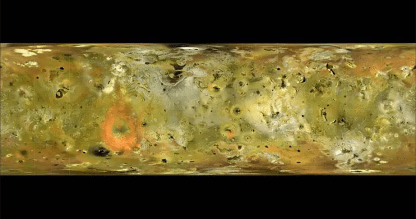
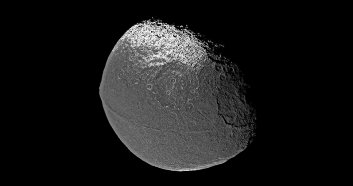
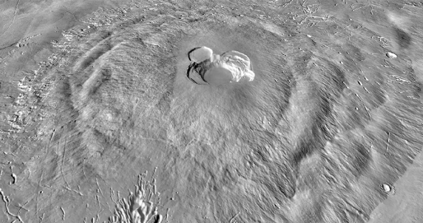
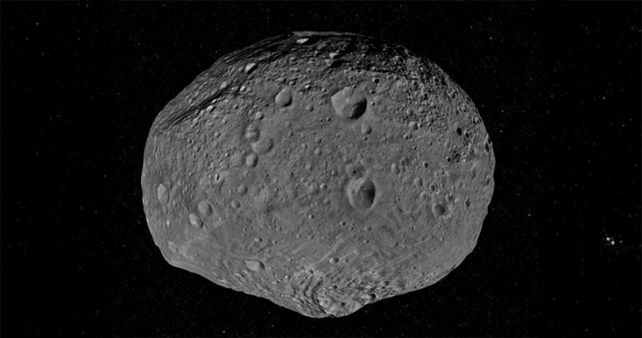
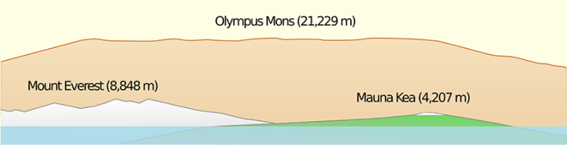

If you’re an adrenaline junkie who chases breathtaking views, consider summiting these unprecedented peaks—but it’ll be quite the hike to get there. The solar system’s tallest mountains are found on planets, moons, and asteroids not named Earth. Some of these extraterrestrial treks put Mount Everest, which towers at nearly 30,000 feet or about 5.5 miles above sea level, to shame.
Learn about some of the solar system’s highest peaks ever discovered, which would prove quite the challenge even for Earth’s hardiest climbers.

IO: A map of the surface of Io. Credit:NASA/JPL/USGS.
On Jupiter’s moon Io—the solar system’s most volcanically active world—you’ll find the mountain Ionian Mons. Its height is estimated at nearly 8 miles. All in all, scientists have discovered more than 130 mountain structures on Io and hundreds of areas associated with volcanic activity.
Also on Io, the mountain Boösaule Montes tops out at around 10.9 miles high. It’s named after the cave where Io, the Greek god Zeus’ lover and the moon’s namesake, gave birth to her son Epaphus.

IAPETUS: The walnut-like moon Iapetus has an impressive equatorial ridge. Credit: NASA/JPL/Space Science Institute.
Saturn’s third largest moon, Iapetus, hosts an equatorial ridge with peaks reaching up to about 12 miles high, more than twice the height of Mount Everest—but this moon is nearly 650 times smaller than our planet. This ridge circling Iapetus makes the moon look like a huge walnut.

ASCRAEUS MONS: The huge volcano Ascraeus Mons, which is found on Mars. Credit: NASA / JPL-Caltech / Arizona State University.
On Mars, the volcano Ascraeus Mons looms about 11 miles tall. Meanwhile, Earth’s highest volcano, Mauna Kea, measures 6.2 miles from its base below sea level to its summit.

VESTA: A 3-D view of the asteroid Vesta. Credit: NASA.
Some 1 billion years ago, an asteroid crashed into the huge asteroid Vesta. This left a crater around 311 miles across—taking up the vast majority of Vesta’s limited real estate. In the center of this crater, called Rheasilvia, a peak of uplifted material rises about 14 miles above the crater’s low spot on its floor.

OLYMPUS MONS: Illustrated here with Earth’s Mount Everest and Mauna Kea, Olympus Mons takes the crown with its staggering height. Credit: Resident Mario/Wikimedia commons.
Finally, Olympus Mons is the most massive of our cosmic neighborhood’s known peaks. It’s difficult to fathom, towering at a height of up to roughly 16 miles. It’s also about 374 miles wide, roughly the size of the state of Arizona.
If you’re headed to one of these formidable features, be sure to pack plenty of water—and oxygen. 
EnjoyingNautilus? Subscribe to our free newsletter.
Lead image: NASA/Goddard Space Flight Center, Scientific Visualization Studio